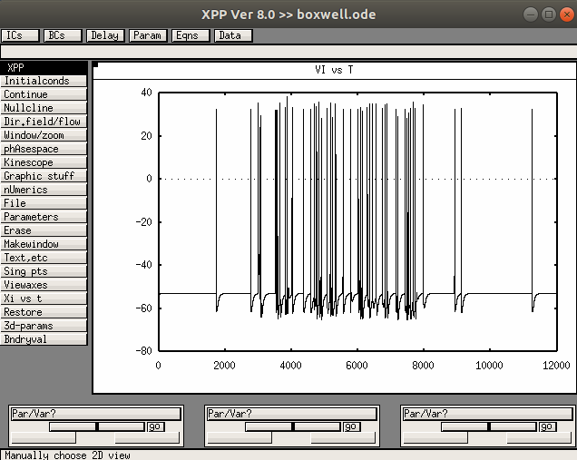
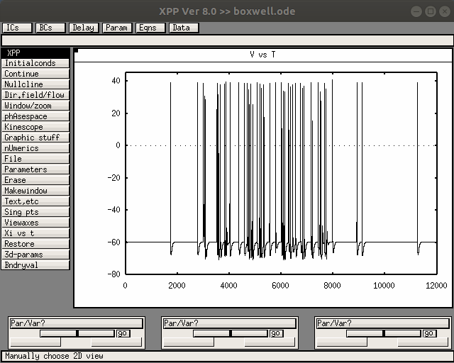

This is the computer model associated with the paper:
Boxwell A, Terman D, Frank M, Yanagawa Y, Travers JB (2018) A computational analysis of signal fidelity in the rostral nucleus of the solitary tract. J Neurophysiol 119:771-785
http://dx.doi.org/10.1152/jn.00624.2017
This XPP ode file was contributed by D Terman. XPP is freely available for windows, mac, linux, (and phones and tablets) from
http://www.math.pitt.edu/~bard/xpp/xpp.html
It contains excitatory and inhibitory neurons with the parameters given in table 1 in the paper.
Example use:
------------
Start with "xppaut boxwell.ode" (linux, or equivalent on your platform) and select Initalconds -> (G)o.
After a few seconds the inhibitory membrane voltage trajectory should appear:

Select "Xi vs t" and change VI to V. You should see the excitatory neuron voltage trajectory:

If you want to change the axis limits you can use Window/zoom -> Window.